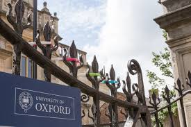

LONDON COLLEGES LIST

The 36 colleges and three societies are a core element of the University, to which they are related via a federal system.
Each college is independent and self-governing, having a charter approved by the Privy Council, under which it is governed by a Head of House, elected and appointed by the governing body directly. The governing body comprises a number of Fellows, most of whom also hold University posts.
Welcome to the London School of Economics and Political Science (LSE), a world-leading university, specialising in social sciences. Based in the heart of London, we are a global community of people and ideas that transform the world.
The University of Edinburgh is a public research university based in Edinburgh, Scotland. Founded by the town council under the authority of a royal charter from King James VI in 1582 and officially ...
The University of Bristol is a red brick Russell Group research university in Bristol, England. It received its royal charter in 1909, although it can trace its roots to a Merchant Venturers' school founded in 1595 and University College, Bristol, which had been in existence since 1876.

If you are an enthusiastic and motivated 16-17 year old student wishing to have an unforgettable and inspirational summer experience, our Warwick Pre-University Summer School is for you. Engage with like-minded peers from around the world on this ten-night programme, which will give you a taste of undergraduate teaching from top Warwick faculty and a true experience of what life is like at University.